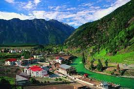

States in pakistan
Punjab
Punjab is one of the four provinces of Pakistan, with a population of about 110,000,000 as of 2021. Forming the bulk of the transnational Punjab region of Pakistan and India,Punjab is one of the four provinces of Pakistan, with a population of about 110,000,000 as of 2021. Forming the bulk of the transnational Punjab region of Pakistan and India,Punjab is one of the four provinces of Pakistan, with a population of about 110,000,000 as of 2021. Forming the bulk of the transnational Punjab region of Pakistan and India,

Sindh
Sindh is one of the five provinces of Pakistan. Located in the southeastern region of the country, Sindh is the third-largest province of Pakistan by total area and the second-largest province by population after Punjab.Sindh is one of the five provinces of Pakistan. Located in the southeastern region of the country, Sindh is the third-largest province of Pakistan by total area and the second-largest province by population after Punjab.Sindh is one of the five provinces of Pakistan. Located in the southeastern region of the country, Sindh is the third-largest province of Pakistan by total area and the second-largest province by population after Punjab.
Balochistan
Balochistan is one of the four provinces of Pakistan. It is the largest province in terms of land area, forming the southwestern region of the country, but is the least populated. Balochistan is one of the four provinces of Pakistan. It is the largest province in terms of land area, forming the southwestern region of the country, but is the least populated. Balochistan is one of the four provinces of Pakistan. It is the largest province in terms of land area, forming the southwestern region of the country, but is the least populated.
KPK
Khyber Pakhtunkhwa, often abbreviated as KP or KPK and formerly known as the North-West Frontier Province, is one of the four provinces of Pakistan. It is located in the northwestern region of the country, along the Afghanistan–Pakistan border.
